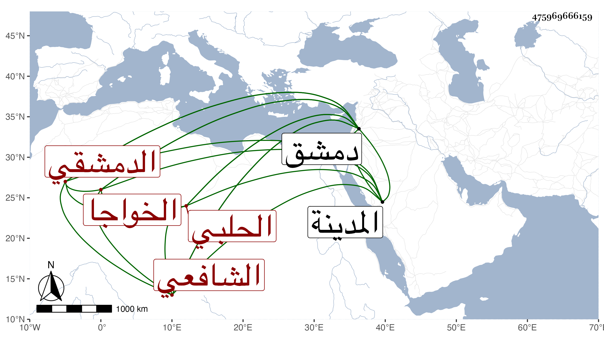

0902Sakhawi.DawLamic.ITO20230111-ara1.EIS1600.475969666159
Biography ID: 475969666159
389
عمر بن محمد بن علي بن أبي بكر بن محمد السراج أبو حفص بن الشمس الحلبي الأصل الدمشقي الشافعي الخواجا بن الخواجا أخو البدر حسن الماضي والآتي أبوهما ويعرف بابن المزلق بضم الميم وفتح الزاي وكسر اللام المشددة . ولد تقريبا سنة ست وثمانين وسبعمائة بدمشق ونشأ بها في رفاهية ونعمة فحفظ القرآن وسمع على الحافظ الزين بن رجب مجلس البطاقة وسمع على غيره وحدث سمع منه الفضلاء ، وكان خيرا سالكا طريق أبيه في تعاني التجارة بل رأيت وصفه بالجناب العالي الخواجكي ملجأ الفقراء والمساكين ، ولما خربت عين المدينة النبوية وسئل الظاهر ططر في عمارتها أرسل صاحب الترجمة بخمسمائة دينار لعمارتها ومدحه الزين بن عياش مقرئ الحرمين بما في ترجمته . مات في الطاعون سنة إحدى وأربعين بدمشق رحمه الله .
